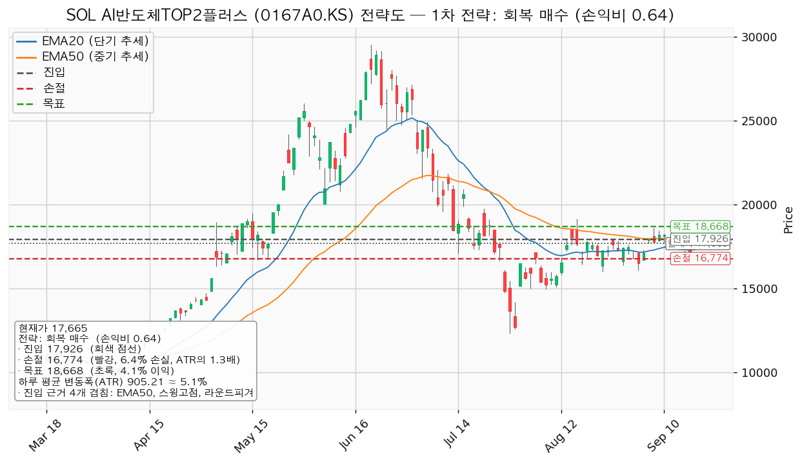
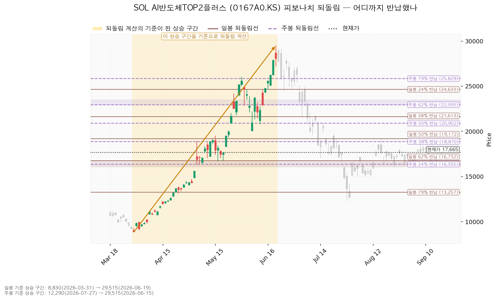
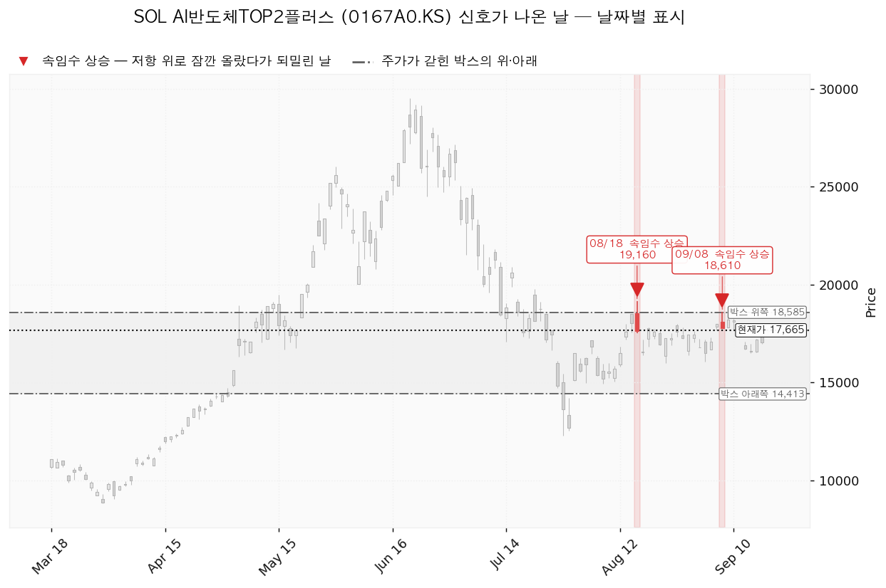
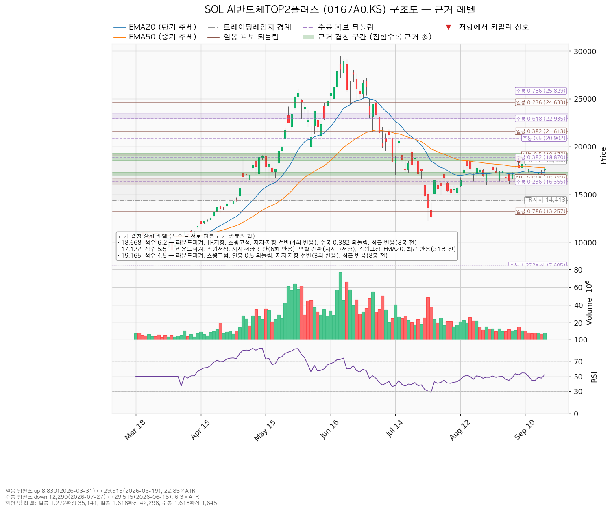

SOL AI반도체TOP2플러스(0167A0.KS)는 국내 AI 반도체 대표 종목에 집중 투자하는 한국 상장 ETF이며, 개별 기업이 아니라 바스켓입니다.
| 구분 | 가격 | 판정 방식 | 현재가 대비 | 상태 |
|---|---|---|---|---|
| 회복선(진입 조건) | 17,926원 | 일봉 종가로 회복한 뒤 되돌림에서 지지되는지 | +1.48% (0.29 ATR) | 회복 대기 |
| 집행 손절 | 16,774원 | 17,926원에서 진입한 경우에만 유효 — 이번엔 진입하지 않으므로 의미 없음 | -5.05% (0.98 ATR) | — |
| 관망 종료 기준 | 17,122원 | 일봉 종가 이탈(오늘 넘어선 겹침 구간 17,000~17,314원의 중심) | -3.07% (0.60 ATR) | 유지 중 |
| 보유분 정리선 | 16,500원 | 일봉 종가 이탈(아래쪽 겹침 구간 하단) | -6.59% (1.29 ATR) | 유지 중 |
| 확인선 | 18,585원 | 일봉 종가 돌파 후 되돌림 지지 확인 | +5.21% (1.02 ATR) | 미돌파 |
| 폐기선(구조) | 14,413원 | 이탈 후 3거래일 내 회복 실패 + 반등에서 저항으로 확인 | -18.41% (3.59 ATR) | 유지 중 — 실무상 작동하지 않음 |
표의 'ATR'은 하루 평균 변동폭(905원)을 뜻하며, 레벨까지의 거리를 "평범한 하루 등락의 몇 배인지"로 환산한 값입니다.
폐기선 14,413원은 현재가에서 하루 변동폭의 3.59배 아래로 3배를 넘어섭니다. 이 거리에서는 가격 폐기선이 실무상 무효화 기준으로 작동하지 않으므로, 별도의 논지 무효화 조건을 아래에 따로 냅니다. 미진입 상태에서 실제로 볼 선은 관망 종료 기준 17,122원이고, 보유 200주에 걸린 선은 16,500원입니다.
확인선 18,585원은 박스 상단이며 동시에 위쪽에서 근거가 가장 두꺼운 구간(18,500~18,870원, 겹침 6.2점) 안에 들어 있습니다. 박스 상단이라는 이유만으로 올린 선이 아닙니다.
직전 리포트는 회복선 17,246원을 "일봉 종가로 회복한 뒤 되돌림에서 지지되는지"로 걸었습니다. 오늘 종가 17,665원으로 충족됐습니다. 하루 만에 +3.70% 올라 그 선을 종가로 넘어섰습니다. 다만 직전 리포트의 셋업 진입 조건은 17,246원이 아니라 확인선 17,926원 종가 돌파였고, 그것은 아직 미충족입니다(현재가가 261원, 0.29 ATR 아래). 직전 리포트가 "그 조건이 충족돼도 손익비 0.68이라 이 계획으로는 사지 않는다"고 적었으므로 진입은 없었고, 따라서 목표·손절 중 어디에 먼저 닿았는지를 판정할 포지션도 없습니다.
아래쪽 기준선은 모두 유지됐습니다 — 관망 종료 기준 16,764원, 보유분 정리선 16,500원, 폐기선 14,413원 어느 것도 건드리지 않았습니다.
| 항목 | 직전(9/17) | 이번(9/18) | 왜 움직였나 |
|---|---|---|---|
| 현재가 | 17,035원 | 17,665원 | +3.70% |
| 회복선 | 17,246원 | 17,926원 | 17,246원이 오늘 종가로 충족돼 다음 관문인 EMA50·스윙고점·라운드피겨 겹침대로 올라갔습니다 |
| 관망 종료 기준 | 16,764원 | 17,122원 | 오늘 종가가 17,000~17,314원 겹침 구간(5.5점)을 넘어섰습니다. 이 구간이 이제 현재가 바로 아래의 가장 두꺼운 지지이며, 종가로 되돌려주면 오늘의 돌파가 실패한 것으로 봅니다 |
| 보유분 정리선 | 16,500원 | 16,500원 | 같습니다. 아래쪽 겹침 구간 하단이 그대로입니다 |
| 확인선 | 17,926원 | 18,585원 | 직전의 확인선이 이번엔 회복선이 됐고, 확인선은 박스 상단이자 6.2점 겹침 구간 안쪽인 18,585원으로 올라갔습니다 |
| 폐기선 | 14,413원 | 14,413원 | 같습니다. 거리만 2.84 ATR에서 3.59 ATR로 멀어졌습니다 |
| 대표 셋업 진입 | 17,926원 | 17,926원 | 같습니다 |
| 대표 셋업 손절 | 16,839원 | 16,774원 | 손절 기준이 된 아래쪽 겹침 구간이 17,070~17,500원에서 17,000~17,314원으로 다시 잡히면서 그 바로 아래 자리가 65원 내려갔습니다 |
| 대표 셋업 목표 | 18,668원 | 18,668원 | 같습니다 |
| 손익비 | 1:0.68 | 1:0.64 | 손절이 내려가 손절 폭이 1.18 ATR에서 1.27 ATR로 넓어졌습니다 |
| 하루 평균 변동폭 | 923원 | 905원 | 축소 |
신규 진입에 대한 결론은 직전과 같습니다 — 패스입니다. 가격이 +3.70% 올랐지만 진입가는 그대로이고 손절이 내려가 손익비는 0.68에서 0.64로 오히려 낮아졌습니다.
보유 200주에 대한 계획은 한 가지가 추가됐습니다. 직전 리포트는 "유지, 추가 매수 없음"만 적고 위쪽에서 무엇을 할지는 적지 않았습니다. 이번에는 위쪽 청산 기준을 명시합니다 — 18,668원 도달 시 전량 청산하되 그날 종가가 18,585원 위면 보유 유지. 직전 리포트도 목표 18,668원이 평단 18,656원과 12원 차이라는 계산은 적어 두었습니다. 이번에 더한 것은 그 가격에서 무엇을 하는지입니다.
직전 리포트의 결측 하나를 정정합니다. 직전 리포트는 "두 종목의 추정치 수정 방향 데이터가 조회되지 않아 어느 쪽인지 판정할 수 없다"고 적었습니다. 이번에는 조회됐고, 방향은 상향입니다 — 90일간 컨센서스 EPS가 SK하이닉스 +15.1%(올해)·+13.5%(내년), 삼성전자 +6.5%(올해)·+22.2%(내년)로 올라갔습니다. 추정치가 오르는 동안 이 ETF가 6월 고점에서 -40.15% 되돌려진 것이므로, 이 하락은 배수 수축으로 판정합니다. 아래 컨센서스 절에서 이어 씁니다.
| 항목 | 값 |
|---|---|
| 현재가 (2026-09-18) | 17,665원 |
| 단기 추세선(EMA20) | 17,314원 — 현재가가 351원 위 |
| 중기 추세선(EMA50) | 17,794원 — 현재가가 129원 아래 |
| RSI(14) | 52.0 (중립) |
| 하루 평균 변동폭(ATR) | 905원 = 주가의 5.12% |
| 박스 구간 | 14,413 ~ 18,585원 (폭 4.61 ATR), 최근 40거래일 기준 |
| 국면 판정 | 횡보 레인지 — 하단 사수 조건부 |
EMA는 최근 가격에 가중치를 더 준 평균선으로 추세의 방향을 봅니다. RSI는 0~100으로 과열·침체를 보는 지표이며 50이 중립입니다. ATR은 하루에 평균 얼마나 움직였는지를 원 단위로 잰 값입니다.
현재가는 단기 추세선 위로 올라섰고 중기 추세선 129원 아래에 붙어 있습니다. 두 선 사이에 끼어 있는 자리이며, 회복선 17,926원은 중기 추세선과 겹치는 가격입니다.
어느 구간을 보고 박스를 판정했는지: 조회된 일봉은 128개이고, 그중 40봉·90봉 두 구간을 모두 시험했습니다. 40봉 창은 가격이 박스 안에 머문 비율 0.95, 방향성 편향 0.42, 폭 4.61 ATR로 가장 잘 들어맞아 이 창이 선택됐습니다. 90봉 창(머문 비율 0.822, 폭 11.81 ATR)도 유효 판정이지만 폭이 하루 변동폭의 11배를 넘어 집행 기준으로 쓰기엔 넓습니다. 즉 최근 두 달 남짓의 횡보를 본 것입니다.
이 박스로 어디에서 들어왔는지: 직전 구간은 20,537~27,765원 박스였고 거기서 아래로 깨지며 이 박스로 내려왔습니다. 위에서 내려온 박스는 매집일 수도 재분산일 수도 있어, 박스 모양만으로는 판정되지 않습니다.
박스 안쪽 관측치(매집·재분산을 가르는 근거):
| 관측 항목 | 값 | 해석 |
|---|---|---|
| 지지 테스트 3회 | 7/29 저가 12,290원(거래량 평균의 1.0배) → 8/4 14,975원(0.90배) → 8/7 14,950원(0.84배) | 테스트마다 매도 거래량 감소 — 매집 쪽 근거 |
| 저점 흐름 | 12,290 → 14,950 → 16,000 → 16,080원 | 절상 — 매집 쪽 근거 |
| 상승봉 대 하락봉 거래량비 | 0.76 | 오를 때 거래량이 빠져 매집 쪽 근거를 상쇄 |
| 종합 판정 | 중립 | 매집·재분산 미확정 |
세 관측치 중 둘은 매집 쪽, 하나는 반대쪽이라 판정이 중립에 멈춰 있습니다. 매집 우위 판정이 나지 않았기 때문에 현재가 부근에서 곧바로 사는 지지 확인형 셋업은 이번에도 산출되지 않았습니다.
7/29 테스트의 상대 거래량은 직전 리포트의 1.81배에서 이번에 1.0배로 다시 계산됐고, 상승봉/하락봉 거래량비도 0.79에서 0.76으로 내려갔습니다. 감소 추세라는 판정과 중립이라는 종합 판정은 직전과 같습니다.
신호 기록: 8/18 19,160원, 9/8 18,610원에 속임수 상승(저항 위로 잠깐 올라섰다가 되밀린 날)이 각각 한 번씩 나왔습니다. 두 번 모두 박스 상단 18,585원 부근에서 위를 시험했다가 실패한 자리입니다.
산출된 셋업은 하나뿐입니다.
| 항목 | 내용 |
|---|---|
| 이름 | 회복 매수 — 롱(매수) |
| 구조 증명도 | 회복 확인형 — 저항을 종가로 되찾은 뒤에만 진입하므로 진입가는 불리하지만 구조가 먼저 증명됩니다 |
| 진입 | 17,926원 (현재가 +1.48%, 0.29 ATR 위) |
| 진입 근거 겹침 | 4개 겹침, 3.3점 — EMA50, 스윙고점, 라운드피겨, 최근 반응(16봉 전). 구간 17,794~18,000원 |
| 손절 | 16,774원 (진입 대비 -6.43%, 1.27 ATR) |
| 손절 근거 | 근거 겹침 구간(17,000~17,314원, 5.5점) 바로 아래로 밀어낸 자리 — 구간 안쪽에 두지 않았기 때문에 손절 폭이 넓어졌고 그만큼 손익비가 낮아졌습니다 |
| 목표 | 18,668원 (진입 대비 +4.14%, 0.82 ATR) |
| 목표 근거 겹침 | 6개 겹침, 6.2점 — 라운드피겨, 박스 상단, 스윙고점, 지지·저항 선반(4회 반응), 주봉 0.382 되돌림, 최근 반응(8봉 전). 구간 18,500~18,870원 |
| 손익비 | 1:0.64 (손절 폭 1.27 ATR) |
| 엣지 학파 | 모멘텀 — "저항을 종가로 되찾으면 그 방향이 이어진다"는 전제 |
| 엣지 성격 | 자주 틀리고 소수가 크게 맞는 유형입니다(이 유형에 대해 일반적으로 하는 말이며, 이 리포트에서 승률을 측정한 것은 아닙니다) |
| 판정 | 패스 |
대표 셋업 선정 근거: 손익비 0.64 × 구조 증명도(회복 확인형) × 근거 겹침 3.3점으로 선정된 셋업입니다. 후보가 하나뿐이라 손익비 1등과 대표 셋업이 갈리는 상황은 이번에도 없습니다.
손절 폭과 구조적 손절의 관계: 이 셋업의 손절 16,774원은 그 자체가 구조적 손절입니다 — 진입 아래 겹침 구간(17,000~17,314원)을 통째로 피해 그 아래에 놓인 값이라 구조적 손절 기준 손익비가 따로 산출되지 않습니다. 손절을 하루 변동폭 안으로 조여 손익비를 좋게 만든 경우가 아니며(손절 폭 1.27 ATR로 하루 변동폭보다 넓습니다), 구조를 지킨 결과로 나온 값이 0.64입니다. 손익비를 1 위로 올리려면 손절을 겹침 구간 안쪽으로 당겨야 하는데, 지지 구간 안에 손절을 두는 방식이므로 쓰지 않습니다.
집행 정책: 손절은 위 하나뿐이고, 청산은 목표에서 전량이며 트레일링은 걸지 않습니다. 진입~목표 거리가 742원 = 0.82 ATR로 하루 변동폭의 2배에 못 미치므로 다단 청산·트레일링을 권하지 않습니다(이 2배 기준은 관행이지 정설이 아닙니다). 중간 레벨이 없어 분할 없이 단일 목표이며, 전 구간 손익비도 0.64로 같습니다. 본전 스탑 이동 단계가 없으므로 하한 손익비는 따로 산출되지 않았습니다.
엣지 정합성: 진입 근거는 모멘텀인데 청산은 고정 목표에서 전량입니다. 이 조합에 대한 집행 규칙은 정해져 있습니다 — 손절은 구조 아래에 두고, 목표 18,668원에서 전량 청산하며 트레일링은 걸지 않습니다. 돌파 이후 구간은 이 포지션의 연장이 아니라 새 셋업으로 다시 잡습니다. 손익비가 1 미만이라 이번엔 집행 대상이 아닙니다.
현재가 추격 여부: 추격 비권장입니다. 저항 회복이 확인되기 전이므로 지금 가격을 좇아 사지 않고 종가 회복을 기다립니다. 대기 좌표는 진입 후보 17,122원(겹침 5.5점 — 라운드피겨, 스윙저점, 지지·저항 선반 6회 반응, 역할 전환(지지→저항), 스윙고점, EMA20, 최근 반응 31봉 전)이고, 이동평균은 5봉 뒤 EMA20이 17,314원 → 17,452원, EMA50이 17,794원 → 17,770원에 놓입니다. 이 투영치는 현재가 17,665원이 그대로 유지될 경우의 이평선 위치이지 가격 예측이 아닙니다.

진입한 경우에 한해 적용되며, 판정 기준선은 17,926원입니다.
| 단계 | 트리거 | 의미 | 행동 |
|---|---|---|---|
| ① 관찰 | 일봉 종가가 17,926원 아래로 마감 | 구조 이탈 시작 — 되돌아 올라오면 속임수 하락일 수 있어 아직 무효가 아닙니다 | 신규 진입만 중단. 집행 손절은 그대로 둡니다 |
| ② 경고 | 이탈 후 3거래일 안에 17,926원을 종가로 회복하지 못함, 또는 그 전에 일봉 종가가 17,021원 아래로 마감(하루 평균 변동폭의 1배만큼 더 밀림) — 둘 중 먼저 오는 쪽 | 저항 회복 실패 가능성이 우세해짐 | 잔여 비중 축소. 반등이 나오면 이 가격에서의 반응을 확인합니다 |
| ③ 무효 | 반등이 17,926원에서 막히고 그 아래로 되밀림(지지가 저항으로 전환) | 셋업 폐기 — 구조 해석이 틀린 것으로 확정 | 포지션 정리 후 새 구조가 만들어질 때까지 관망 |
집행 손절 16,774원은 이 3단계 판정과 무관하게 별도로 작동하며, 장중 일시 이탈은 어느 단계에도 해당하지 않습니다.
| 기준 | 구간 | 주요 되돌림선 |
|---|---|---|
| 일봉 (상승 구간) | 8,830원(3/31) → 29,515원(6/19), 22.85 ATR | 0.5 = 19,173원 / 0.618 = 16,732원 / 0.786 = 13,257원 |
| 주봉 (하락 구간) | 29,515원(6/15) → 12,290원(7/27), 6.3 ATR | 0.236 = 16,355원 / 0.382 = 18,870원 / 0.5 = 20,903원 |
현재가 17,665원은 일봉 기준 상승분의 62%를 반납한 자리(16,732원) 위에 있습니다. 그 아래 16,070~16,732원은 되돌림이 가장 자주 멈추는 것으로 알려진 61.8~65% 구간이며, 보유분 정리선 16,500원이 그 안에 있습니다. 위쪽으로는 주봉 하락분의 38% 되돌림 18,870원이 목표 겹침 구간(18,500~18,870원)의 상단을 이룹니다. 일봉·주봉 모두 기준이 될 상승·하락 구간이 유효하게 잡혀 되돌림선이 계산됐습니다.

| 날짜 | 신호 | 가격 | 읽는 법 |
|---|---|---|---|
| 2026-08-18 | 속임수 상승 | 19,160원 | 박스 상단 위로 올라섰다가 되밀린 날 |
| 2026-09-08 | 속임수 상승 | 18,610원 | 같은 실패가 3주 뒤 더 낮은 가격에서 반복 |
두 번의 실패 가격이 19,160원에서 18,610원으로 낮아졌습니다. 박스 상단을 시험하는 힘이 직전보다 약해졌다는 기록이며, 확인선 18,585원을 종가로 넘기 전까지는 위쪽 시도를 상단 실패의 연장으로 봅니다. 국면은 미확정이며, 매집·재분산 어느 쪽으로도 판정되지 않았습니다.

| 가격 | 점수 | 근거 | 현재가 대비 |
|---|---|---|---|
| 18,668원 (18,500~18,870) | 6.2 | 라운드피겨, 박스 상단, 스윙고점, 선반(4회 반응), 주봉 0.382 되돌림, 최근 반응(8봉 전) | +5.68% |
| 19,165원 (19,000~19,328) | 4.5 | 라운드피겨, 스윙고점, 일봉 0.5 되돌림, 선반(3회 반응), 최근 반응(8봉 전) | +8.49% |
| 17,926원 (17,794~18,000) | 3.3 | EMA50, 스윙고점, 라운드피겨, 최근 반응(16봉 전) | +1.48% |
| 17,122원 (17,000~17,314) | 5.5 | 라운드피겨, 스윙저점, 선반(6회 반응), 역할 전환(지지→저항), 스윙고점, EMA20, 최근 반응(31봉 전) | -3.07% |
| 16,603원 (16,500~16,732) | 4.3 | 라운드피겨, 선반(5회 반응), 역할 전환(저항→지지), 일봉 0.618 되돌림, 최근 반응(3봉 전) | -6.01% |
| 16,109원 (16,000~16,355) | 3.8 | 스윙저점 2개, 라운드피겨, 주봉 0.236 되돌림, 최근 반응(3봉 전) | -8.81% |
| 14,413원 | 1.2 | 박스 하단 | -18.41% |
표의 '선반'은 가격이 실제로 여러 번 되돌아선 수평 가격대를 뜻하며, 이평선·되돌림선처럼 계산으로 만든 선과 달리 실제 매매가 남긴 자국입니다. '겹침 점수'는 서로 다른 종류의 근거가 같은 가격대에 몇 개나 모였는지를 점수로 환산한 값입니다.
오늘 가격 움직임의 실질은 17,000~17,314원 구간(5.5점)을 종가로 넘어선 것입니다. 이 구간의 17,105원 선반은 6회 반응했고 지지에서 저항으로 역할이 바뀐 자리이며, 가장 최근 반응이 어제 자 봉에 잡혀 있었습니다. 현재가 17,665원은 그 위로 351원(0.39 ATR) 올라와 있습니다. 관망 종료 기준을 이 구간의 중심 17,122원에 둔 이유가 여기 있습니다 — 종가로 되돌려주면 오늘의 돌파가 실패한 것이고, 그때 기준선은 다시 아래쪽으로 내려갑니다.
아래쪽에서 다음으로 두꺼운 구간은 16,500~16,732원(4.3점)이며, 여기 16,590원 선반은 5회 반응했고 저항에서 지지로 역할이 바뀐 자리입니다. 보유분 정리선을 이 구간의 하단 16,500원에 둔 이유가 여기 있습니다. 구간 안쪽에서 오르내리는 것은 이 박스에서 흔한 움직임이며, 구간 전체를 종가로 잃는 것만 다르게 판정합니다.
셋업의 집행 손절 16,774원은 진입 아래 겹침 구간(17,000~17,314원)을 피해 내려놓은 자리이고, 16,500~16,732원 구간의 바로 위에 놓입니다. 현재가에서는 하루 변동폭의 0.98배 아래입니다. 이 선을 평단 18,656원짜리 보유분에 그대로 적용하면 보유분 기준선(16,500원)보다 274원 먼저 체결되므로, 두 선을 섞지 않습니다.
16,109원(3.8점)은 정리선 아래에서 가격이 다음으로 반응할 만한 구간이고, 그 아래로는 박스 하단 14,413원까지 1,696원(1.87 ATR) 사이에 겹침 점수 1.2점 이상인 구간이 없습니다.

대신 이 ETF가 담는 두 종목의 수치는 이번에 전부 조회됐습니다. 직전 리포트에서 빠져 있던 추정치 수정 방향과 현금흐름이 여기 포함됩니다.
⑴ 배수와 이익 추정치
| 종목 | 현재가 | 후행 배수 | 선행 배수 | 올해 EPS 추정 | 내년 EPS 추정 | 내년 증가율 |
|---|---|---|---|---|---|---|
| SK하이닉스 (000660.KS) | 1,839,000원 | 제공 안 됨 | 3.92배 | 351,751원 | 469,406원 | +33.4% |
| 삼성전자 (005930.KS) | 259,750원 | 제공 안 됨 | 3.68배 | 48,246원 | 70,507원 | +46.1% |
두 종목 모두 후행 배수가 제공되지 않아 후행·선행 비교는 할 수 없습니다. 이 사실을 그대로 적고, 선행 배수만으로 비싸다·싸다를 단정하지 않습니다. 선행 3.7~3.9배는 시장이 다음 12개월 이익을 지금보다 크게 잡고 있다는 뜻이며, 실제로 내년 EPS 추정은 올해 대비 +33.4%·+46.1% 증가로 잡혀 있습니다.
⑵ 추정치 수정 방향 — 하락의 성격
| 종목 | 올해 EPS 90일 변화 | 내년 EPS 90일 변화 |
|---|---|---|
| SK하이닉스 | +15.1% (305,490 → 351,751원) | +13.5% (413,579 → 469,406원) |
| 삼성전자 | +6.5% (45,306 → 48,246원) | +22.2% (57,697 → 70,507원) |
네 항목 모두 상향입니다. 이 ETF는 6월 고점 29,515원에서 -40.15% 되돌려졌는데 그 사이 담고 있는 두 종목의 이익 추정치는 올라갔습니다. 추정치가 오르는 동안 가격이 내린 것이므로 이 하락은 배수 수축으로 판정합니다. 사업 악화를 가리키는 근거는 이번 데이터에 없습니다. 직전 리포트는 이 데이터를 조회하지 못해 판정을 보류했고, 이번에 판정합니다.
⑶ 목표주가 분포
| 종목 | 평균 | 최저 | 최고 | 커버 | 현재가 위치 |
|---|---|---|---|---|---|
| SK하이닉스 | 3,184,026원 | 1,535,000원 | 5,300,000원 | 37명 | 최저 목표보다 +19.8% 위 |
| 삼성전자 | 475,850원 | 290,000원 | 725,000원 | 36명 | 애널리스트 36명 중 가장 낮은 목표 290,000원보다도 아래 (-10.4%) |
삼성전자 현재가 259,750원은 커버하는 36명 중 가장 낮은 목표보다도 아래에 있습니다. SK하이닉스는 최저 목표 위에 있습니다. 두 종목 모두 추천등급은 강력매수입니다.
⑷ 상승 여력의 분해
| 종목 | 컨센서스 상승 여력 | 현재 선행 배수 | 목표가 내재하는 배수 | 분해 |
|---|---|---|---|---|
| SK하이닉스 | +73.1% | 3.92배 | 6.78배 | 배수 확장 +73%, 이익 증가 기여 0% |
| 삼성전자 | +83.2% | 3.68배 | 6.75배 | 배수 확장 +83%, 이익 증가 기여 0% |
목표주가를 내년 EPS 추정으로 나눈 내재 배수가 6.7~6.8배이고 현재 선행 배수는 3.7~3.9배입니다. 내년 이익 증가분은 이미 선행 배수 안에 들어가 있으므로, 컨센서스 목표의 상승분은 전부 배수가 3.9배에서 6.8배로 확장되는 것을 전제합니다. 이익이 늘어나는 것만으로는 그 목표에 닿지 않는다는 뜻이며, 배수 확장에만 기댄 목표입니다.
⑸ 현금흐름 (결산 기준일 2025-12-31)
| 종목 | 영업현금흐름 | 잉여현금흐름 | 설비투자 변화 |
|---|---|---|---|
| SK하이닉스 | +53.4조원 | +24.8조원 | +71.5% (16.7조 → 28.6조원) |
| 삼성전자 | +85.3조원 | +33.2조원 | -3.0% (53.7조 → 52.2조원) |
두 종목 모두 영업현금흐름과 잉여현금흐름이 양수여서 현금흐름 적자의 성격을 가를 상황이 아닙니다. SK하이닉스는 설비투자를 +71.5% 늘리고도 잉여현금흐름 24.8조원을 남겼습니다. 이 증설이 이익으로 돌아오는지는 10/27 실적에서 확인 항목으로 겁니다.
⑹ 섹터 강도
20일 초과수익 기준으로 국내 반도체 섹터는 지수 대비 +3.29%이며, 앞선 섹터는 건설 +17.46%, AI전력기기 +13.12%, 2차전지 +7.58%, 은행 +7.11%로 반도체는 5번째입니다. 5일 기준으로는 +1.78%로 지수를 앞섭니다. 직전 리포트 시점(20일 +2.44%, 5일 -2.26%)보다 두 기간 모두 개선됐습니다.
주도주 판정: 아닙니다. 20일·5일 모두 지수를 앞서게 됐지만 상위 네 섹터와 격차가 크고, 1일 기준으로는 -0.12%입니다. 이 ETF 자체도 6월 고점에서 -40.15% 되돌려진 상태로 박스 안에 있으며, 박스 상단 시험 가격이 8/18 19,160원 → 9/8 18,610원으로 낮아졌습니다.
시계 차이: 위 컨센서스의 시계는 12개월이고 이 리포트 셋업의 시계는 수 주입니다. 층위가 다르므로 결론이 갈려도 모순이 아니며, 이 리포트의 답은 진입·손절·목표로 냅니다.
| 날짜 | 이벤트 | 볼 것 |
|---|---|---|
| 2026-09-24 | 주간 신규 실업수당 청구 | 고용 둔화 속도 |
| 2026-09-30 | PCE 물가지수, GDP | 9/17 금리 결정 이후의 물가 경로. 금리 민감도가 큰 성장주 바스켓이라 물가가 다시 튀면 박스 하단 쪽 압력이 커집니다 |
| 2026-10-02 | 고용보고서(비농업 고용·실업률) | 긴축 지속 여부의 근거 |
| 2026-10-14 | 소비자물가지수(CPI) | 위와 같음 |
| 2026-10-27 | SK하이닉스 실적 | 기초 자산 실적. 아래 논지 무효화 참조. 설비투자 +71.5%의 회수 속도도 여기서 봅니다 |
| 2026-10-28 | 삼성전자 실적 · FOMC 금리 결정 | 같은 날 둘이 겹칩니다. 이 ETF에는 가장 중요한 날짜입니다 |
ETF 자체에는 실적 발표일이 없으므로, 날짜가 있는 확인 이벤트는 담고 있는 두 종목의 실적일과 매크로 지표 발표일로 겁니다.
가격 폐기선 14,413원은 현재가에서 하루 변동폭의 3.59배 아래로 3배를 넘어섭니다. 실무상 무효화 기준으로 작동하지 않습니다. 보유분은 그보다 2,087원 위인 16,500원에서 정리되고, 미진입자가 볼 선은 17,122원입니다. 폐기선은 박스 해석 자체의 종료 조건으로만 남습니다.
가격과 별개로 이 판단을 접는 조건은 10월 말 기초 자산 실적입니다. ETF에는 실적이 없으므로 담고 있는 두 종목의 숫자로 겁니다.
| 항목 | 값 |
|---|---|
| 1회 매매 손실 한도 | 계좌의 1.0% |
| 손절 폭 | 진입 대비 -6.43% (1.27 ATR) |
| 계산상 포지션 크기 | 계좌의 15.6% |
| 적용 한도 | 계좌의 13% — 한 종목에 13%를 넘게 싣지 않으므로 제한합니다 |
| 이번 집행 | 없음 — 손익비 0.64로 패스 판정이라 신규 매수를 하지 않습니다 |
보유 200주의 현재 상태: 평단 18,656원, 평가금액 3,533,000원(취득원가 3,731,200원), 평가손익 -5.31%(-198,200원), 최초 진입 2026-08-03. 직전 리포트 시점의 -8.69%(-324,200원)에서 126,000원 줄었습니다.
보유분에 대한 계획: 유지하되 추가 매수는 하지 않습니다. 위아래 집행 기준은 다음 셋입니다.
1. 18,668원 도달 시 전량 청산 — 평단 18,656원 대비 +0.06%(+2,398원). 위쪽에서 근거가 가장 두꺼운 구간(18,500~18,870원, 6.2점)이며 박스가 허용하는 끝입니다. 2. 단, 그날 일봉 종가가 18,585원 위로 마감하면 청산하지 않고 보유 유지 — 박스 상단을 종가로 넘은 것이므로 구조가 바뀝니다. 그때는 새 셋업으로 다시 잡고, 위쪽 다음 저항은 19,165원(4.5점)입니다. 3. 16,500원 일봉 종가 이탈 시 전량 정리 — 평단 대비 -11.56%(-431,200원).
도구 적합성: 하루 평균 변동폭이 주가의 5.12%로 8% 기준 아래에 있고, 셋업 손절 폭 1.27 ATR은 하루 변동폭보다 넓어 무관한 등락으로 체결될 구조는 아닙니다. 보유분 정리선 16,500원은 현재가에서 1.29 ATR 거리로 직전 리포트 시점(0.58 ATR)보다 여유가 생겼습니다 — 그래도 종가 기준으로만 판정하고 장중 등락으로 집행하지 마십시오.
이 리포트는 투자 자문이 아니며, 최종 판단과 책임은 투자자 본인에게 있습니다.